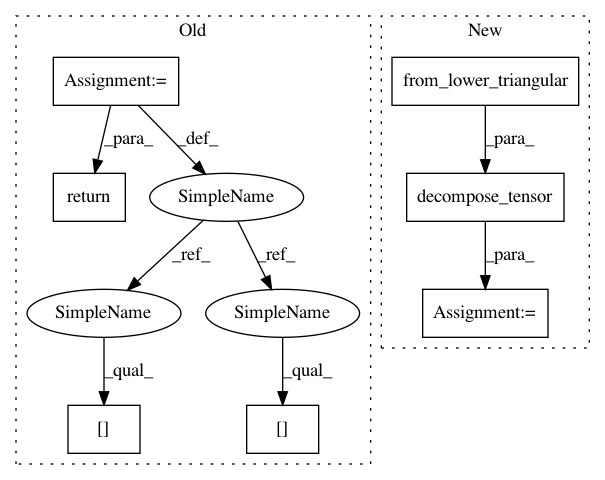

ed2b80836fb92142143d8b7702d5519761671cf5,dipy/reconst/dki.py,,_ols_iter,#Any#Any#Any#Any#,700
Before Change
log_s = np.log(sig)
result = np.dot(inv_design, log_s)
D=result[:6]
tensor = from_lower_triangular(D)
MD_square = ((tensor[0,0] + tensor[1,1] + tensor[2,2])/3.)**2
K_elements=result[6:21]/MD_square
return decompose_tensors(tensor, K_elements,
min_diffusivity=min_diffusivity)
def wls_fit_dki(design_matrix, data, min_signal=1):
r
After Change
// Extracting diffusion tensor
DT_elements = result[:6]
evals, evecs = decompose_tensor(from_lower_triangular(DT_elements))
// Extracting kurtosis tensor
MD_square = (evals.mean(0))**2
KT_elements = result[6:21] / MD_square
In pattern: SUPERPATTERN
Frequency: 3
Non-data size: 7
Instances
Project Name: nipy/dipy
Commit Name: ed2b80836fb92142143d8b7702d5519761671cf5
Time: 2015-07-08
Author: rafaelnh21@gmail.com
File Name: dipy/reconst/dki.py
Class Name:
Method Name: _ols_iter
Project Name: nipy/dipy
Commit Name: 4f3da275037d4fe3108039fdbfc03b2f81fbee8c
Time: 2015-10-15
Author: dimrozakis@gmail.com
File Name: dipy/reconst/dti.py
Class Name:
Method Name: ols_fit_tensor
Project Name: nipy/dipy
Commit Name: ed2b80836fb92142143d8b7702d5519761671cf5
Time: 2015-07-08
Author: rafaelnh21@gmail.com
File Name: dipy/reconst/dki.py
Class Name:
Method Name: _ols_iter
Project Name: nipy/dipy
Commit Name: fa786e5f2a8016725991cf2d02eebe6368dc04b3
Time: 2015-10-15
Author: dimrozakis@gmail.com
File Name: dipy/reconst/dti.py
Class Name:
Method Name: wls_fit_tensor